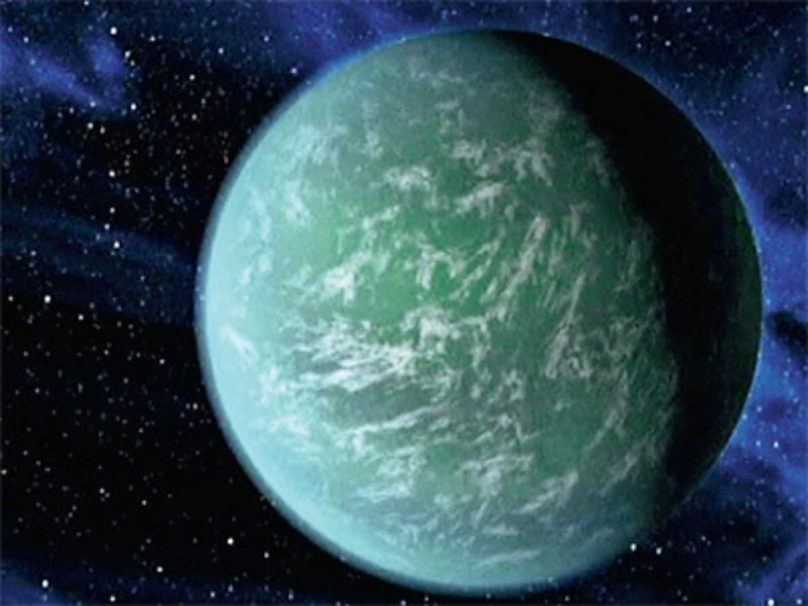

Greater Blue-Eared Starling

Output on MobileNet black grouse
Output on Google Lens greater blue-Eared starling
Google Lens is More Accurate
Kepler-22b Planet

Output on MobileNet spotlight,spot
Output on Google Lens Kepler-22b
Google Lens is More Accurate
Green Sea Turtle

Output on MobileNet Digital Clock
Output on Google Lens Green Sea Turtle
Google Lens is More Accurate
Siberian Husky

Output on MobileNet Eskimo dog, husky
Output on Google Lens Siberian Husky
Google Lens is More Accurate
Indian Pangolin
Output on MobileNet Ambystoma maculatum
Output on Google Lens Indian Pangolin
Google Lens is More Accurate
I have tested 5 images in which Google Lens has identified all the 5 images correctly and more accurately and MobileNet identified 1 image correctly but did not do it more accurately.So according to my Case Study Google Lens is more accurate.
 Google Lens
Google Lens